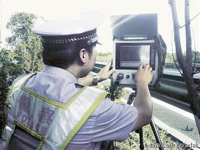

大家交规学得如何？超速50％以上会被罚款多少？是被罚1000元。门头沟水闸附近一个路段限速50公里，开到76公里／小时，就是超速50％了。还有更狠的，房山有路段限速40公里。我知道是因为刚交了罚款回来。 
在Facebook潜水了很长一段时间，前两天修改了状态，显示“已婚”，结果引来一堆留言，大家调侃不已，连Matt(以前的director)也不明所以地发个“Congratulations"。是不是最近让大家兴奋的事情太少，找个事由大家就可以乐呵乐呵。